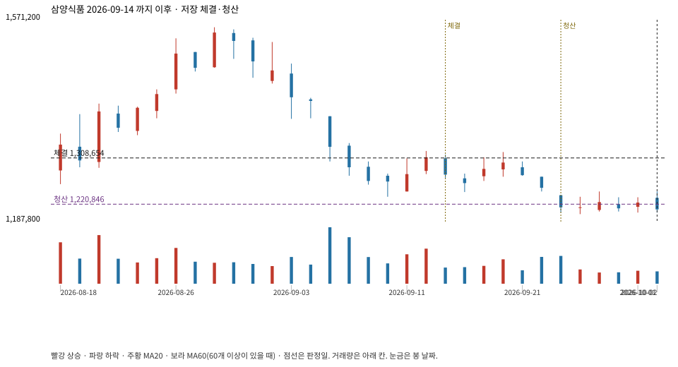

계좌를 다시 돌리지 않았다. 아래는 저장된 주문·체결·청산·비용·손익이다.

{
"case_id": "45d64cb4e6961ac4",
"status": "closed",
"trade": {
"symbol": "003230.KS",
"signal_date": "2026-09-14",
"quantity": 12,
"entry": 1310000,
"stop": 1221457,
"target": 1557000,
"planned_risk": 1100214.8972579967,
"reserved_cash": 15735719.999999998,
"fill": {
"date": "2026-09-15",
"price": 1308654,
"fee": 15703.848
},
"exit": {
"date": "2026-09-23",
"price": 1220846.2715,
"reason": "stop",
"net_pnl": -1084046.745257996,
"ambiguous_bar": false
}
},
"cost": "research fee 10bp each side, slippage 5bp; amounts below are the stored ledger, not a new run",
"chart": "c\/45d64cb4e6961ac4.svg"
}